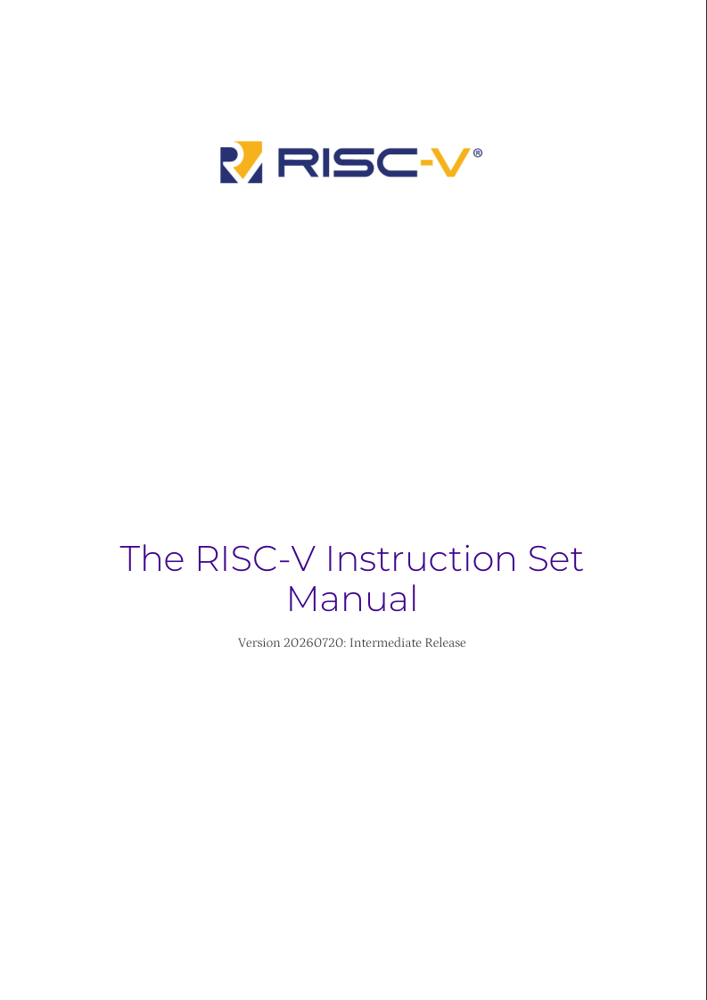
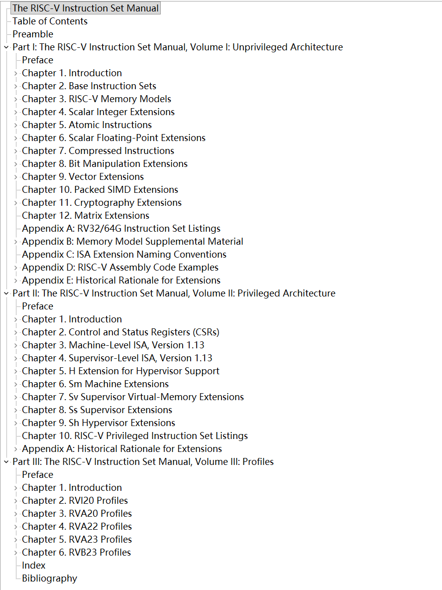

如何理解 CPU 是一个状态机
在编译原理课上我们学过 NFA(不确定的有穷状态自动机) 和 DFA(有穷状态自动机).
- 状态集合: $S = \{S_1, S_2, ...\}$;
- 激励事件;
- 状态转移规则: $next: S * E -> S$;
- 初始状态: $S_0$;

如何理解 CPU 是一个状态机
理论计算机的开端: 图灵机.
从下图我们很容易看出: 图灵机由输入的 program 和一条无限长的纸带组成.
输入的program 可以看作是激励(input), 纸带的内容和读写头的位置就可以看作是状态(state).

看看标准里都写了什么
|
 |
 |
|---|
为什么 x86 是CISC
x86 的 MOV 指令:
; 1. 寄存器 ← 寄存器
mov rax, rbx ; 64位
mov eax, edx ; 32位
mov al, bl ; 8位
; 2. 寄存器 ← 立即数
mov rax, 42
mov eax, 0x1234
mov al, 'A'
; 3. 内存 ← 寄存器
mov [rax], rbx
mov DWORD PTR [rbp-4], eax
; 4. 寄存器 ← 内存
mov rax, [rbx]
mov eax, DWORD PTR [rbp+8]
; 5. 内存 ← 立即数
mov QWORD PTR [rsp], 0
mov BYTE PTR [rdi], 1

指令格式(1)

- 指令格式固定
- opcode/func3/func7的位置固定.
- rs1/rs2/rd 位置固定, 可以减少一个选择器.
- 指令长度固定(除了C扩展)